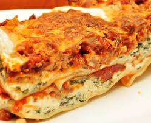

Best Lasagna in the World
This lasagna recipe takes a little work, but it is so satisfying and filling that it's worth it!

Ingredients
- Meat: This super meaty lasagna has sweet Italian sausage and lean ground beef.
- Onion and garlic: You'll need a can of crushed tomatoes, two cans of tomato sauce, and two cans of tomato paste.
- Tomato products: Two tablespoons of white sugar add subtle sweetness and enhance the flavor of the sauce.
- Sugar: This super meaty lasagna has sweet Italian sausage and lean ground beef.
- Spices and seasonings: his lasagna recipe is flavored with fresh parsley, dried basil leaves, salt, Italian seasoning, fennel seeds, and black pepper.
- Lasagna noodles:Use store-bought or lasagna noodles.
- Cheeses: Parmesan, mozzarella, and ricotta cheese make this lasagna extra decadent.
- Egg: An egg helps bind the ricotta so it doesn't ooze out of the lasagna when you cut into it.
Procedure
Here's a very brief overview of what you can expect when you make homemade lasagna:
- Make the meat sauce.
- Cook the noodles.
- Make the ricotta mixture.
- Layer the lasagna according to the recipe instructions.
- Cover with foil and bake.
- Let the lasagna rest before serving.